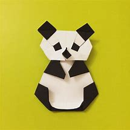
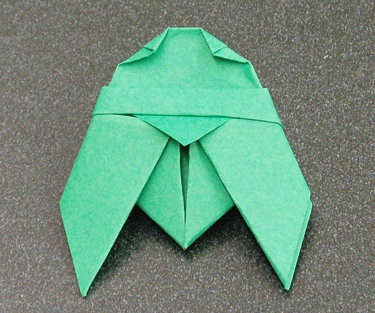

Origami Designs
About Us
Follow Us
These are some of our Designs!

Some Facts About the camel
- When a camel finally does find water, he can drink up to 40 gallons in one go.
- Camels are very strong and can carry up to 900 pounds for 25 miles a day.
- Camels can travel at up to 40 miles per hour – the same as a racehorse!

Some Facts About Chameleon
- The largest chameleon is the Parson’s chameleon, according to Encyclopedia Britannica.
- The smallest chameleon has a special distinction. It is also one of the smallest vertebrates ever discovered.
- Changing skin color is an important part of communication among chameleons.
Some Facts About pigeon
- They Can Recognize Themselves Research studies have found that pigeons, unlike most other birds on the planet.
- Pigeons are Very Fast Ever heard of pigeon racing? It’s a real thing and that’s because pigeons are very fast when!
- Pigeons are Spiritual to Some Religions In several religions around the world, pigeons are considered spiritual.

Some Facts About Bear
- Bears are extraordinarily intelligent animals. They have far superior navigation skills to humans; excellent memories; large brain to body ratio; and use tools in various contexts from play to hunting.
- Bears grieve deeply for others. Cubs are known to moan and cry when separated from their mothers. This can go on for weeks if their mothers are killed by hunters.
- Some species of Asiatic bear build nests in the trees. They can use these for hiding, eating and even sleeping.

Some Facts About Panda
- The typical panda grows from 1.2 m to 1.9 m.
- Pandas are native to south-central China.
- In captivity, the average lifespan of a panda is 30 years.

Some Facts About Flying Cicada
- Cicadas are members of the Cicadoidea superfamily.
- A cicada’s body color can be black, brown and green.
- A cicada’s eye color can be blue, red or white.